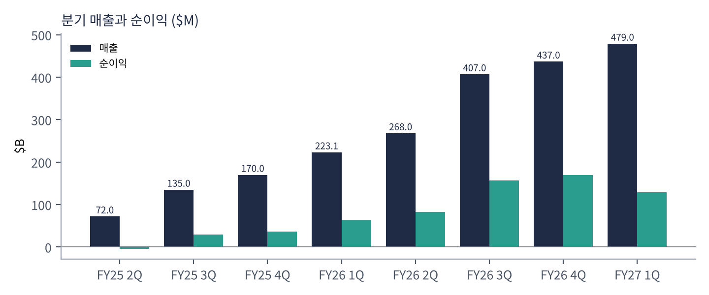
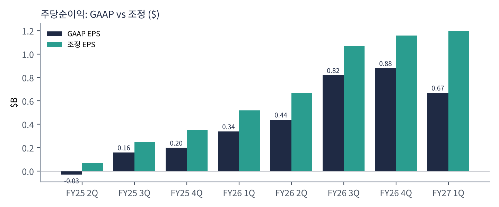
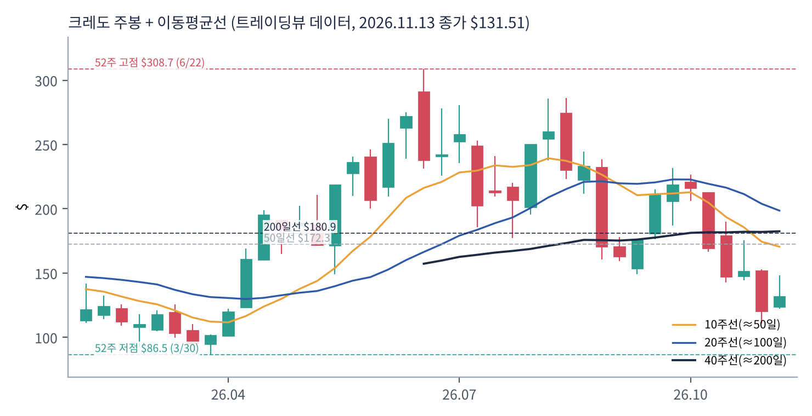
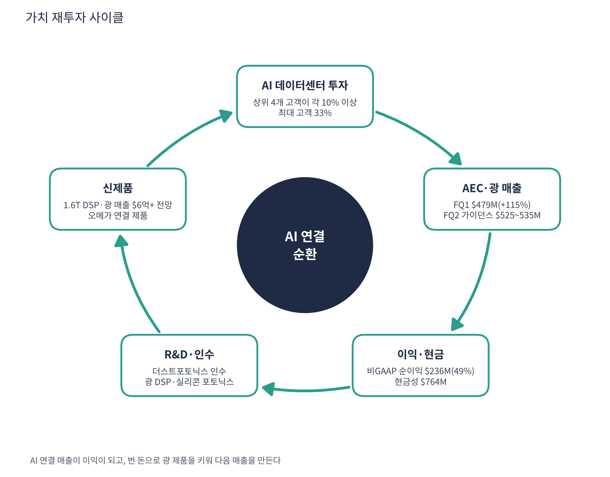

크레도 테크놀로지는 AI 데이터센터 서버를 서로 잇는 고속 케이블(AEC)과 칩을 만드는 회사다. 최근 광 부품 회사 더스트포토닉스를 인수했다. 매출이 두 배로 늘고 비GAAP 순이익률이 49%인 고성장 회사지만 고객 소수 의존이 큰 회사다.
| 항목 | 내용 |
|---|---|
| 종목 | Credo Technology (CRDO) · NASDAQ · AI 연결 반도체·케이블 · 회계연도 4~5월 마감 |
| 시가총액 | 약 $247억 · PER 46.9배 · P/S 17.08배 (11/13 종가 $131.51) |
| 최근 분기(FY27 1Q) | 매출 $4.8억(+115%), 비GAAP EPS $1.20, GAAP EPS $0.67, 비GAAP 순이익 $2.36억 |
| 고객 | 상위 4개 고객 비중 33%·28%·13%·10% |
| 가이던스 | FQ2 매출 $5.25~5.35억, FY27 매출 성장 85% 이상, 광 매출 $6억 이상 전망 |
| 현금·부채 | 회사: 현금성 $7.64억. 차입금·EBITDA는 미수집 |
| 직책 | 인물 | 역할·특징 |
|---|---|---|
| CEO | 빌 브레넌 | AEC 시장 개척. 광 제품과 인수로 영역 확장 |
경영 스타일: '소수 대형 고객과 깊게 맞춰 개발'. 상위 고객 사용량에 따라 분기 실적이 크게 움직인다. GAAP 총마진 64.5% 수준을 유지하고, 번 돈으로 광 DSP와 실리콘 포토닉스에 투자한다.
전기 케이블에 칩을 넣어 짧은 거리를 싸게 연결(AEC)하고, 광 신호 처리 칩으로 영역을 넓힌다.
더스트포토닉스 인수로 광 연결까지 제품군을 넓히려 한다.
| 분기 | 매출 | 순이익 | EPS | 조정 EPS | 특이 사항 |
|---|---|---|---|---|---|
| FY25 2Q | $0.7억 | -$0.0억 | -0.03 | 0.07 | |
| FY25 3Q | $1.4억 | $0.3억 | 0.16 | 0.25 | |
| FY25 4Q | $1.7억 | $0.4억 | 0.20 | 0.35 | |
| FY26 1Q | $2.2억 | $0.6억 | 0.34 | 0.52 | |
| FY26 2Q | $2.7억 | $0.8억 | 0.44 | 0.67 | |
| FY26 3Q | $4.1억 | $1.6억 | 0.82 | 1.07 | |
| FY26 4Q | $4.4억 | $1.7억 | 0.88 | 1.16 | |
| FY27 1Q | $4.8억 | $1.3억 | 0.67 | 1.20 | FQ1 매출 +115%, 비GAAP 순이익 $2.36억 |


회계연도는 5월~4월 기준이다(FY27 1Q는 2026년 8월 분기). 조정 EPS는 트레이딩뷰 Reported(비GAAP)다. FQ2 FY27 실적은 아직 발표 전이다.
흐름 요약: 분기 매출이 $0.72억에서 $4.79억으로 약 6.7배 늘었고 비GAAP EPS는 $0.07에서 $1.20으로 올랐다. FY27 1Q GAAP 순이익은 직전 분기 대비 줄었다($1.29억 vs $1.69억). 분기 설비투자는 구하지 못했다.
| 항목 | 값 | 비고 |
|---|---|---|
| FQ1 매출 | $4.79억 | +115% |
| 최대 고객 | 33% | 상위 4개 합 84%(내 계산) |
| 광 매출 전망 | $6억 이상(FY27) | 회사 |
상위 4개 고객이 매출의 84%다(내 계산 33+28+13+10). AEC가 주력이고 광 제품이 성장 축이다. 제품별 비중은 구하지 못했다.
크레도는 'AI 서버 연결을 가장 효율적으로 만드는 회사'를 목표로 한다.
| 축 | 최근 움직임 |
|---|---|
| 제품 | AEC, 1.6T DSP, 광 제품 |
| 인수 | 더스트포토닉스(광) |
| 위험 | 상위 고객 의존, 변동성 큼 |

| 이동평균 | 값 | 종가 대비 | 해석 |
|---|---|---|---|
| 5일선 | $135.08 | -2.6% | 현재가가 아래 |
| 20일선 | $149.05 | -11.8% | 현재가가 아래 |
| 50일선 | $172.28 | -23.7% | 현재가가 아래 |
| 100일선 | $202.22 | -35.0% | 현재가가 아래 |
| 200일선 | $180.86 | -27.3% | 현재가가 아래 (-27%) |
주봉 흐름: 52주 저점 $86.5(2026.3.30)에서 급등해 2026.6.22 고점 $308.7을 찍은 뒤 하락해 $131.5다. 현재가는 모든 이동평균선 아래다.
| 규칙 | 기준 | 현재 값 | 신호 |
|---|---|---|---|
| 장기 추세 필터 | 종가 vs 200일선 | $131.51 < $180.86 | 매도 |
| 중장기 교차 | 50일선 vs 200일선 | $172.28 < $180.86 | 매도 |
| 단기 교차 | 20일선 vs 50일선 | $149.05 < $172.28 | 매도 |
| 돈키언 채널 | 55일 고가 $240.49 / 저가 $110.83 | 중간값 $175.66 아래 | 매도 |
| 1개월 모멘텀 | 21거래일 수익률 | -26.3% (기준 $178.50) | 매도 |
| 3개월 모멘텀 | 63거래일 수익률 | -53.5% (기준 $282.82) | 매도 |
| 6개월 모멘텀 | 126거래일 수익률 | -23.6% (기준 $172.17) | 매도 |
| 12개월 모멘텀 | 252거래일 수익률 | -18.0% (기준 $160.34) | 매도 |
| 종합 (8개 평균) | -1.00 | 강한 매도 |
해석: 8개 신호 중 매수 0개, 매도 8개(점수 -1.00, 강한 매도)다. 14일 ATR $15.74 (12.0%).
| 가격·조건 | 무엇이 바뀌나 | 의미 |
|---|---|---|
| $180.86 돌파 | 200일선 | 매도 → 매수 |
| 50일선이 200일선 위로 | 50/200 교차 | 매도 → 매수 |
| 20일선이 50일선 위로 | 20/50 교차 | 매도 → 매수 |
| $175.66 돌파 | 돈키언 중간값 | 매도 → 매수 |
| $178.50 돌파 | 1개월 기준가 | 매도 → 매수 |
| 구분 | 가격대 | 근거 |
|---|---|---|
| 저항 1 | $135.1 ~ 149.1 | 5일선 $135.1, 20일선 $149.1 |
| 저항 2 | $172.3 ~ 202.2 | 50일선 $172.3, 100일선 $202.2 |
| 지지 1 | $110.8 | 55일 저점 |
| 지지 2 | $86.5 | 52주 저점(2026.3.30) |
전 신호가 매도(−1.0)이고 14일 ATR이 $15.7로 변동이 매우 크다. 5일선($135.1) 회복 전에는 비중을 두지 않고, 회복 후에도 분할로 접근한다. $110.8 종가 이탈 시 정리한다. FQ2 실적이 확인 지점이다.
| 악재 요인 | 내용 | 강도 |
|---|---|---|
| 고객 집중 | 상위 4개 고객 84% | 높음 |
| 변동성 | 52주 고점 $308.7 대비 −57%, ATR $15.7 | 높음 |
| 인수 통합 | 더스트포토닉스 | 중간 |
| 추세 | 모든 이동평균선 아래 | 높음 |
| 티커 | 회사 | 시가총액 | PER(TTM) | PEG | P/S | EPS 성장(YoY) |
|---|---|---|---|---|---|---|
| CRDO | 크레도 | $25B | 46.9배 | 0.16 | 17.08배 | +312% |
| AVGO | 브로드컴 | $1,656B | 44.3배 | 0.46 | 19.98배 | +100% |
| ALAB | 아스테라랩스 | $39B | 88.0배 | 0.73 | 26.94배 | +124% |
| COHR | 코히런트 | $43B | 45.2배 | 0.08 | 5.93배 | +596% |
CRDO·ALAB·COHR의 높은 EPS 성장률은 기저효과를 포함한다. 값은 스캐너 기준이다.
크레도는 현금성 자산 $7.64억이 있고 이익이 현금을 만든다. 차입금·잉여현금은 이번 조사에서 확보하지 못했다.
| 지표 | 값 | 계산·출처 | 해석 |
|---|---|---|---|
| 현금성 | $7.64억 | 회사 FQ1 발표 | 시총의 약 3.1% |
| 총차입금 | 미수집 | – | 확인 필요 |
| 비GAAP 순이익(FQ1) | $2.36억 | 회사 | 순이익률 49%(내 계산 $236.3M ÷ $479.0M) |
| 기준 | 값 | 비고 |
|---|---|---|
| P/S (TTM) | 17.08배 | 스캐너 |
| 동종 | AVGO 20.0, ALAB 26.9, COHR 5.9 | 11/13 스캐너 |
해석: 스트레스 가정(내 가정): P/S 12배 $92(-30%) · P/S 15배 $115(-12%) · P/S 20배 $154(+17%) · P/S 25배 $192(+46%).
| 지표 | 값 | 판정 |
|---|---|---|
| PER (GAAP TTM) | 46.9배 | 성장 감안 시 낮은 편 |
| PER (비GAAP TTM, 내 계산) | 약 32.1배 | $131.51 ÷ 최근 4분기 합 $4.10 |
| EBITDA | 미수집 | 확인 필요 |
| 방식 | PER | EPS 성장률 | PEG | 판정 |
|---|---|---|---|---|
| 트레이딩뷰 (GAAP TTM) | 46.9배 | +312% | 0.16 | 기저효과 가능 |
| 비GAAP 기준(내 계산) | 약 32.1배 | +245% | 약 0.13 | 최근 4분기 합 $4.10 ÷ 직전 4분기 $1.19 |
| 성장 둔화 가정(내 가정) | 46.9배 | +60% | 약 0.78 | 성장이 60%로 낮아질 때 |
판정: PEG 0.16은 투자 적격(≤1.0) 구간이지만 과거 EPS가 작았던 기저효과가 크다. 성장이 60%로 낮아져도 약 0.78이라 1.0 이하다. 다만 소수 고객 의존은 위험으로 남는다.

크레도의 사이클은 AI 데이터센터 투자 → AEC·광 매출 → 이익·현금 → R&D·인수 → 신제품 → 다시 매출이다. 고객 투자가 매출과 이익이 되고, 번 돈이 광 제품에 들어가 다음 매출을 만든다.
| 고리 | 현재 숫자 | 고리 강도 | 약해지는 신호 |
|---|---|---|---|
| ① AI 데이터센터 투자 | 상위 4개 고객이 각 10% 이상, 최대 33% | 강함 | 고객 발주 축소 |
| ② AEC·광 매출 | FQ1 $4.79억(+115%), FQ2 가이던스 $5.25~5.35억 | 강함 | 성장률 둔화 |
| ③ 이익·현금 | 비GAAP 순이익 $2.36억(49%), 현금성 $7.64억 | 강함 | 마진 하락 |
| ④ R&D·인수 | 더스트포토닉스, 광 DSP | 보통 | 통합 지연 |
| ⑤ 신제품 | 1.6T DSP, 광 매출 $6억+ 전망 | 보통 | 출시 지연 |
구조: ①②③이 강하다. 고객 소수 의존이라 ①이 흔들리면 사이클 전체가 흔들린다.